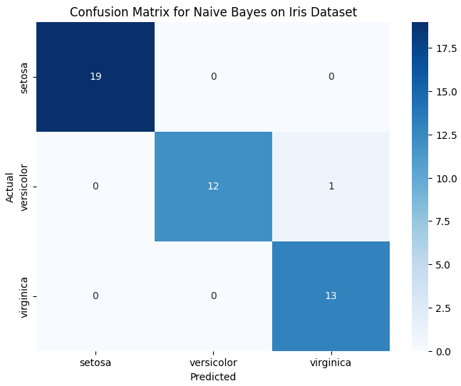
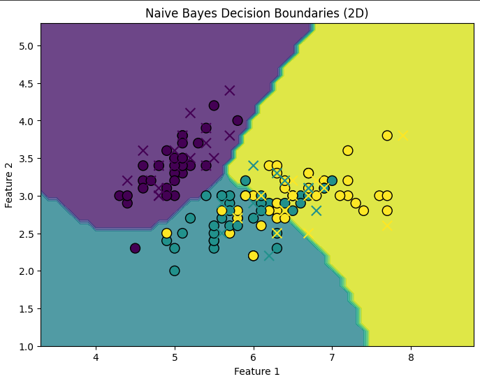

Naive Bayes
Introduction to Naive Bayes
Naive Bayes is a probabilistic machine learning algorithm based on Bayes' theorem, assuming that features are independent given the class. It's widely used for classification tasks due to its simplicity, efficiency, and effectiveness in handling large datasets.
Working Mechanism of Naive Bayes
1. Data Representation
- Data Collection: The first step involves collecting a labeled dataset where the target variable (class) and features (attributes) are defined. For example, in a spam email classification problem, the target could be whether the email is "spam" or "not spam," and the features could include words or phrases within the email.
- Data Preprocessing: This step ensures that the data is clean and structured. This
involves:
- Handling missing values: Missing data can be filled using mean, median, or mode imputation or simply removed.
- Feature selection: Removing irrelevant or redundant features can help the model perform better.
- Feature scaling: Although Naive Bayes doesn’t require feature scaling, if you're working with continuous data, it's a good idea to standardize the features.
- Data Splitting: The dataset is divided into two parts: training and testing sets. The training data is used to build the model, while the testing set is used to evaluate its performance.
2.Model Training
- Bayes' Theorem: The model is trained using Bayes' theorem, which calculates the probability of a class (target variable) given a set of features. Bayes’ theorem is defined as:
- P(C∣X)= P(X∣C)P(C)/ P(X)
- P(C∣X) is the posterior probability (probability of class C given features X).
- P(X∣C) is the likelihood (probability of observing features X given class C).
- P(C) is the prior probability (probability of class C without considering features).
- P(X) is the evidence (probability of observing features X).
- Likelihood Calculation: For each class, the likelihood of the features given that class is calculated. For categorical features, this is typically done using frequency counts (e.g., how often a feature appears in each class). For continuous features, it is assumed that they follow a probability distribution, often Gaussian (Normal) distribution.
- Prior Probability: The prior probability of each class is calculated from the training dataset as the ratio of the number of instances of that class to the total number of instances.
- Independence Assumption: Since Naive Bayes assumes that features are conditionally independent, the likelihood of all features is computed by multiplying the individual probabilities. This makes the computation simpler and faster.
3.Prediction
- Class Probability Calculation: After training, the Naive Bayes model can predict the class of a new instance. For each possible class C, the model calculates the posterior probability using Bayes’ theorem, based on the values of the input features X.
- Choosing the Class: The class with the highest posterior probability is chosen as the predicted class
4.Model Evaluation
- Accuracy Measurement:The performance of the Naive Bayes classifier is evaluated using the testing dataset. Common evaluation metrics include accuracy, precision, recall, and F1-score. Accuracy is the proportion of correctly predicted instances out of the total instances.
- Confusion Matrix: A confusion matrix can also be used to visualize the performance of the classifier. It shows the number of true positives, true negatives, false positives, and false negatives.
- Cross-Validation:In some cases, cross-validation is used to assess the model's generalizability by splitting the data into multiple subsets (folds) and evaluating the model on each fold. This helps reduce overfitting and ensures the model performs well on unseen data.
Advantages of Naive Bayes
- Simple and efficient: Naive Bayes is easy to implement and computationally efficient.
- Handles large datasets well: It works well with large datasets and high-dimensional data, such as text classification.
- Works well with categorical and continuous data: Naive Bayes can handle both types of features effectively.
Disadvantages of Naive Bayes
- Independence assumption: The algorithm assumes that features are independent, which is often unrealistic, leading to suboptimal performance when features are correlated.
- Sensitive to noisy data: Naive Bayes can perform poorly if the training data contains a lot of noise or irrelevant features.
- Limited expressiveness: The simplicity of Naive Bayes can limit its ability to capture complex relationships in the data.
Sample Code Example
Naive Bayes Classifier in Action: Classifying Iris Species based on Flower Features:
# Import necessary libraries
import numpy as np
import pandas as pd
import seaborn as sns
import matplotlib.pyplot as plt
from sklearn.model_selection import train_test_split
from sklearn.naive_bayes import GaussianNB
from sklearn.metrics import accuracy_score, confusion_matrix
# Load Iris dataset
from sklearn.datasets import load_iris
iris = load_iris()
X = iris.data
y = iris.target
# Split the data into training and testing sets
X_train, X_test, y_train, y_test = train_test_split(X, y, test_size=0.3, random_state=42)
# Initialize the Naive Bayes classifier
nb = GaussianNB()
# Train the model
nb.fit(X_train, y_train)
# Predict on the test set
y_pred = nb.predict(X_test)
# Evaluate the model
accuracy = accuracy_score(y_test, y_pred)
print(f"Accuracy: {accuracy * 100:.2f}%")
# Confusion Matrix
conf_matrix = confusion_matrix(y_test, y_pred)
# Plotting the Confusion Matrix
plt.figure(figsize=(8, 6))
sns.heatmap(conf_matrix, annot=True, fmt="d", cmap="Blues", xticklabels=iris.target_names, yticklabels=iris.target_names)
plt.title("Confusion Matrix for Naive Bayes on Iris Dataset")
plt.xlabel("Predicted")
plt.ylabel("Actual")
plt.show()
# Visualizing the decision boundaries for the first two features
X2d = X[:, :2] # Use only the first two features for visualization
X_train2d, X_test2d, y_train2d, y_test2d = train_test_split(X2d, y, test_size=0.3, random_state=42)
# Train Naive Bayes on 2D data
nb.fit(X_train2d, y_train2d)
# Create a meshgrid for visualization
x_min, x_max = X2d[:, 0].min() - 1, X2d[:, 0].max() + 1
y_min, y_max = X2d[:, 1].min() - 1, X2d[:, 1].max() + 1
xx, yy = np.meshgrid(np.arange(x_min, x_max, 0.1), np.arange(y_min, y_max, 0.1))
# Predict on the meshgrid points
Z = nb.predict(np.c_[xx.ravel(), yy.ravel()])
Z = Z.reshape(xx.shape)
# Plot decision boundary
plt.figure(figsize=(8, 6))
plt.contourf(xx, yy, Z, alpha=0.8)
plt.scatter(X_train2d[:, 0], X_train2d[:, 1], c=y_train2d, edgecolors='k', marker='o', s=100, cmap="viridis")
plt.scatter(X_test2d[:, 0], X_test2d[:, 1], c=y_test2d, edgecolors='r', marker='x', s=100, cmap="viridis")
plt.title("Naive Bayes Decision Boundaries (2D)")
plt.xlabel('Feature 1')
plt.ylabel('Feature 2')
plt.show()
Output:

